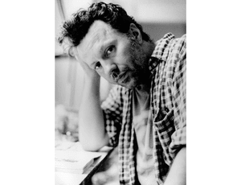
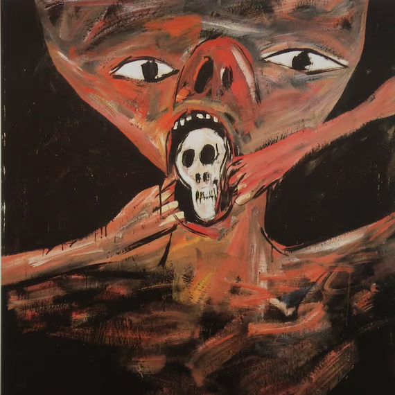
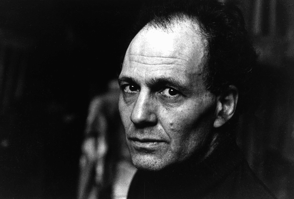
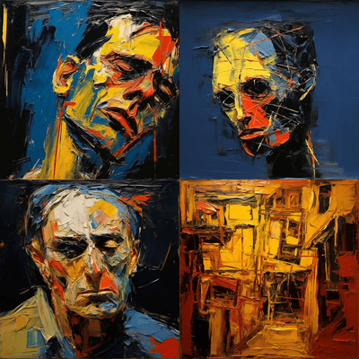
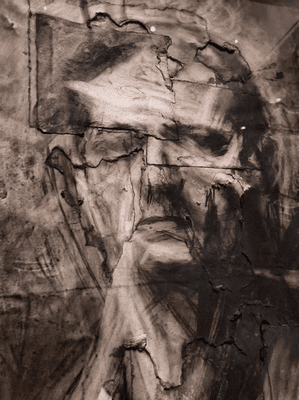

აქტუალური სიახლეები ხელოვნების სფეროში
ვალტერ დანი, გერმანელი მხატვარი, რომელიც ხელმძღვანელობდა ბრალდებას გაბატონებული სტილის წინააღმდეგ, გარდაიცვალა 70 წლის ასაკში.
ვალტერ დანი, მხატვარი, რომლის ნახატებმა მინიმალიზმსა და კონცეპტუალიზმს იუმორითა და მადლით უპასუხა, რამაც მას მიმდევარი კულტი მოუპოვა როგორც გერმანიაში, ასევე მის ფარგლებს გარეთ, გარდაიცვალა 70 წლის ასაკში. მისი გარდაცვალების შესახებ ოთხშაბათს გამოაცხადა მისმა გალერეამ, Sprüth Magers, სადაც არ არის ნათქვამი მიზეზი. დაიბადა 1954 წელს გერმანიის ქალაქ ტონისვორსტში. ის სწავლობდა ჯოზეფ ბოისთან, რომლის კონცეფციამ ხელოვნებაზე, როგორც მუშაობის ექსპანსიურ, მუდმივად განვითარებად ფორმაზე, შთააგონა მისი საკუთარი პრაქტიკა. დანი იხსენებს თავის განათლებას ბოისის დროს, როგორც „გიჟების თავშესაფრის, საბავშვო ბაღისა და ხელოვნების სკოლის ერთგვარ ნაზავს“.
Asthma I (1982), Walter Dahn |
„ვალტერ დანის დაკარგვით, ჩვენ დავემშვიდობეთ მთავარ მხატვარს, რომლის ფართო ნამუშევარი მრავალი თვალსაზრისით იყო ხედვითი“, - წერს Sprüth Magers თავის განცხადებაში.
ფრენკ აუერბახი, მხატვარი, რომელმაც პორტრეტის განსხვავებული სახე შექმნა, გარდაიცვალა 93 წლის ასაკში
ფრენკ აურბახი, ბრიტანული ხელოვნების ისტორიის ერთ-ერთი წამყვანი ფიგურა, რომელიც ცნობილია თავისი სქელი, აბსტრაქტული სტილის პორტრეტებით, გარდაიცვალა ლონდონში 93 წლის ასაკში. მისი გარდაცვალება გამოაცხადა Frankie Rossi Art Projects-მა. აურბახი ცნობილი იყო იმით, რომ მისი ნამუშევრები ტრადიციულ პორტრეტულ ჟანრს ცვლიდა, აკავშირებდა აბსტრაქციასა და ემოციურ ინტენსივობას. მისი შემოქმედება, განსაკუთრებით 1950-60-იან წლებში, გამოირჩეოდა ფერწერის რადიკალური მიდგომით და სკულპტურული სიღრმით, რაც ხელოვნების თანამედროვე ტენდენციებზე დიდი გავლენა მოახდინა.
მხატვრის კარიერა დაიწყო გერმანიიდან გაქცევის შემდეგ, როცა იგი ინგლისში ჩავიდა ბავშვობაში, რადგან მისი მშობლები ნაცისტების მიერ განადგურდნენ. მისი შემოქმედება ყოველთვის განსაკუთრებულად აფასებდა ინგლისური და საერთაშორისო ხელოვნების წრეებში.
აურბახის გავლენა დღემდე იგრძნობა მისი ნამუშევრების აბსტრაქტული სტრუქტურითა და ემოციური დინამიკით, რაც სამომავლოდაც შთააგონებს მხატვრებს.